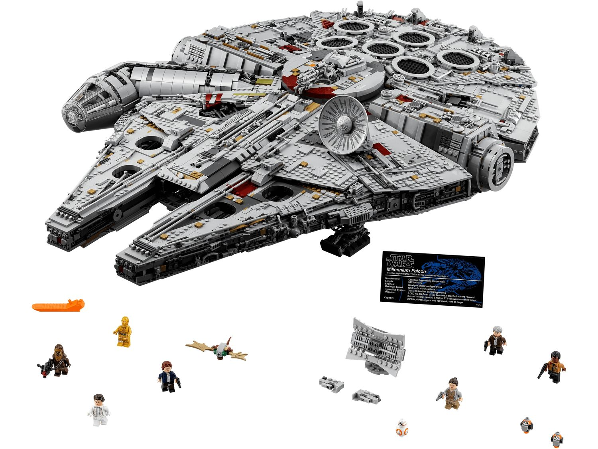

LEGO Star Wars
LEGO Star Wars combines the creativity of LEGO building with characters, vehicles, and locations from the Star Wars universe.
Best For: Star Wars fans and collectors
Difficulty: Beginner to Advanced
LEGO offers a huge variety of themes that allow builders to explore different worlds, stories, vehicles, characters, and building styles. Explore some of the most popular LEGO themes below and discover which one might be right for you.

LEGO Star Wars combines the creativity of LEGO building with characters, vehicles, and locations from the Star Wars universe.
Best For: Star Wars fans and collectors
Difficulty: Beginner to Advanced

Ninjago follows a group of ninja heroes as they protect their world from dangerous villains and discover new adventures.
Best For: Builders who enjoy action and fantasy
Difficulty: Beginner to Advanced

LEGO City allows builders to create realistic communities filled with emergency services, vehicles, buildings, trains, and everyday life.
Best For: Beginners and realistic-world builders
Difficulty: Beginner to Intermediate

LEGO Technic focuses on realistic engineering and mechanical functions using gears, axles, suspension systems, and moving parts.
Best For: Builders interested in engineering and vehicles
Difficulty: Intermediate to Advanced

LEGO Minecraft brings the digital world of Minecraft into physical LEGO builds with familiar characters, creatures, and environments.
Best For: Minecraft fans and creative builders
Difficulty: Beginner to Intermediate
LEGO Icons includes detailed models designed primarily for older builders and collectors, including buildings, vehicles, and famous objects.
Best For: Adult builders and collectors
Difficulty: Intermediate to Advanced
Choosing a LEGO theme depends on what you enjoy building. If you enjoy movies and collecting, Star Wars may be a good choice. If you prefer fantasy adventures, Ninjago could be a better fit. Builders who enjoy realistic vehicles may prefer City or Technic.
There is no single "best" LEGO theme. The best theme is the one that matches your interests and gives you the most enjoyment while building.
If you are just beginning your LEGO collection, check out our Beginner Guide for advice about choosing sets, managing your budget, organizing your collection, and getting the most enjoyment from your LEGO hobby.
Visit the Beginner Guide